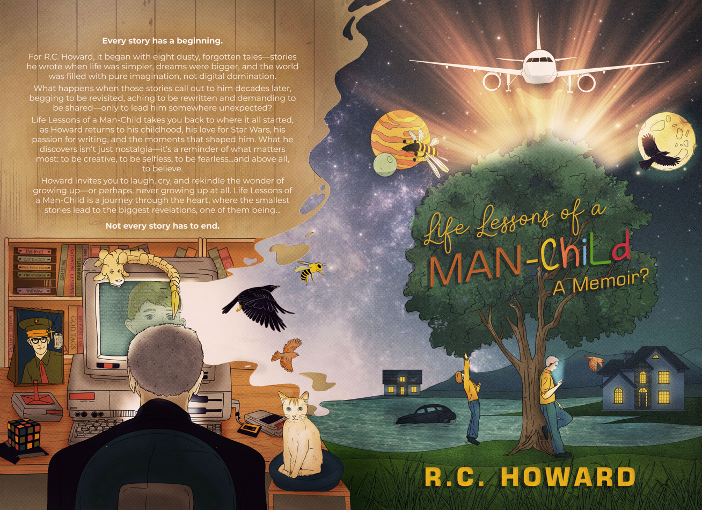

THE MEMOIR
Life Lessons of
a Man-Child.
A Memoir? · By R. C. Howard

The small stories
have a way of staying.
I went looking through old memories and found more than nostalgia. Family. Imagination. The people who shaped me. A few laughs at my own expense. And reminders that the little moments aren't always so little.
This is a memoir about growing up—or perhaps never quite growing up—and finding the courage to create something from the life you've lived.
“Not every story has to end.”
Available in Kindle, paperback, and hardcover. Visit Amazon for current prices and the available sample.
Amazon opens separately. A click here doesn't tell us whether you purchased.
GET A FEEL FOR THE WORLD